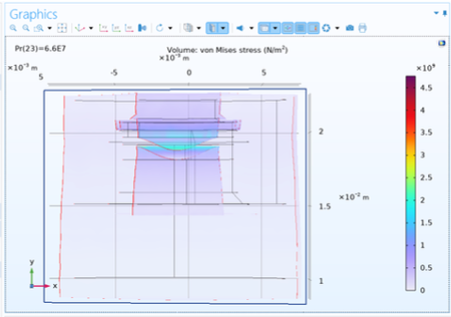
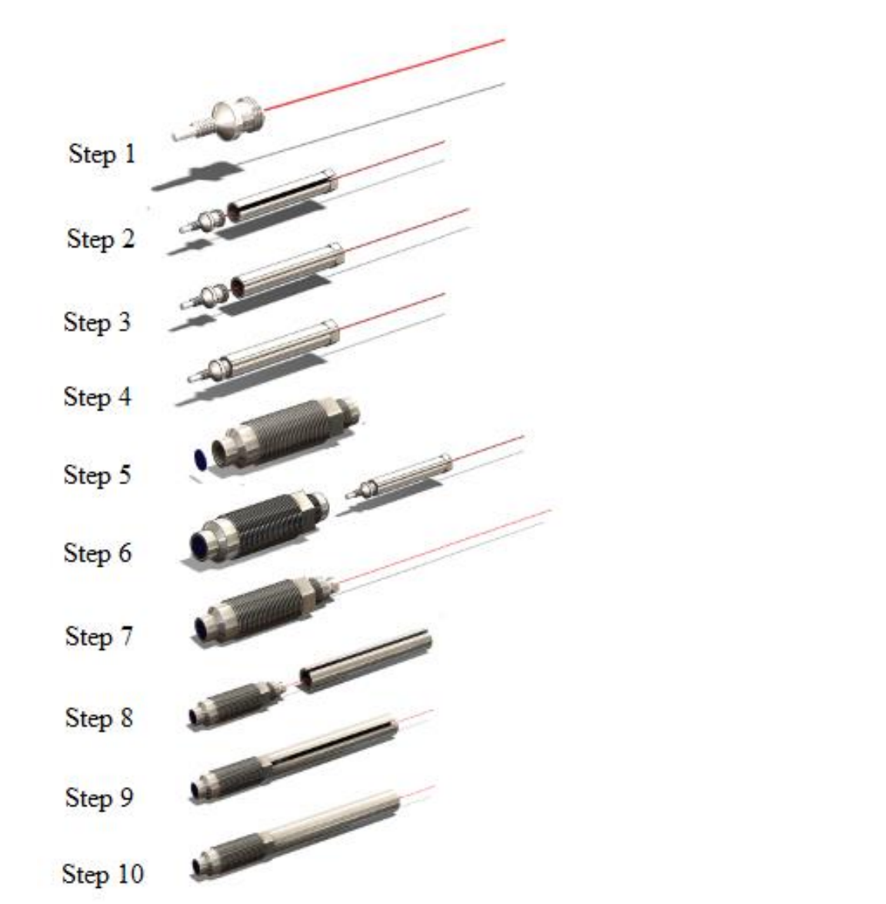
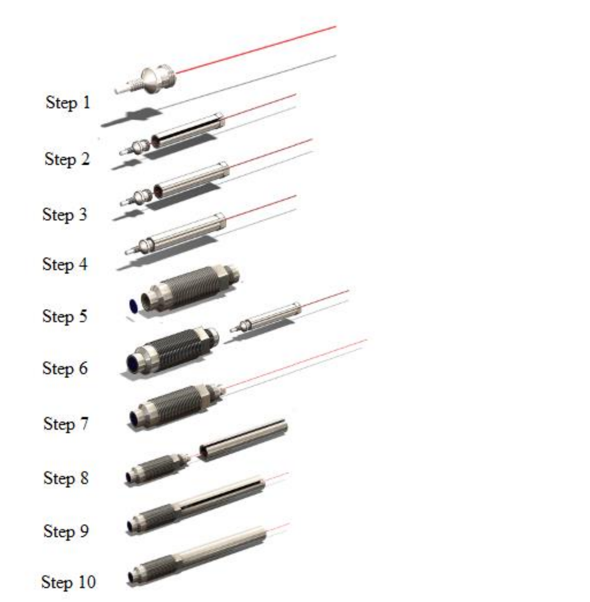
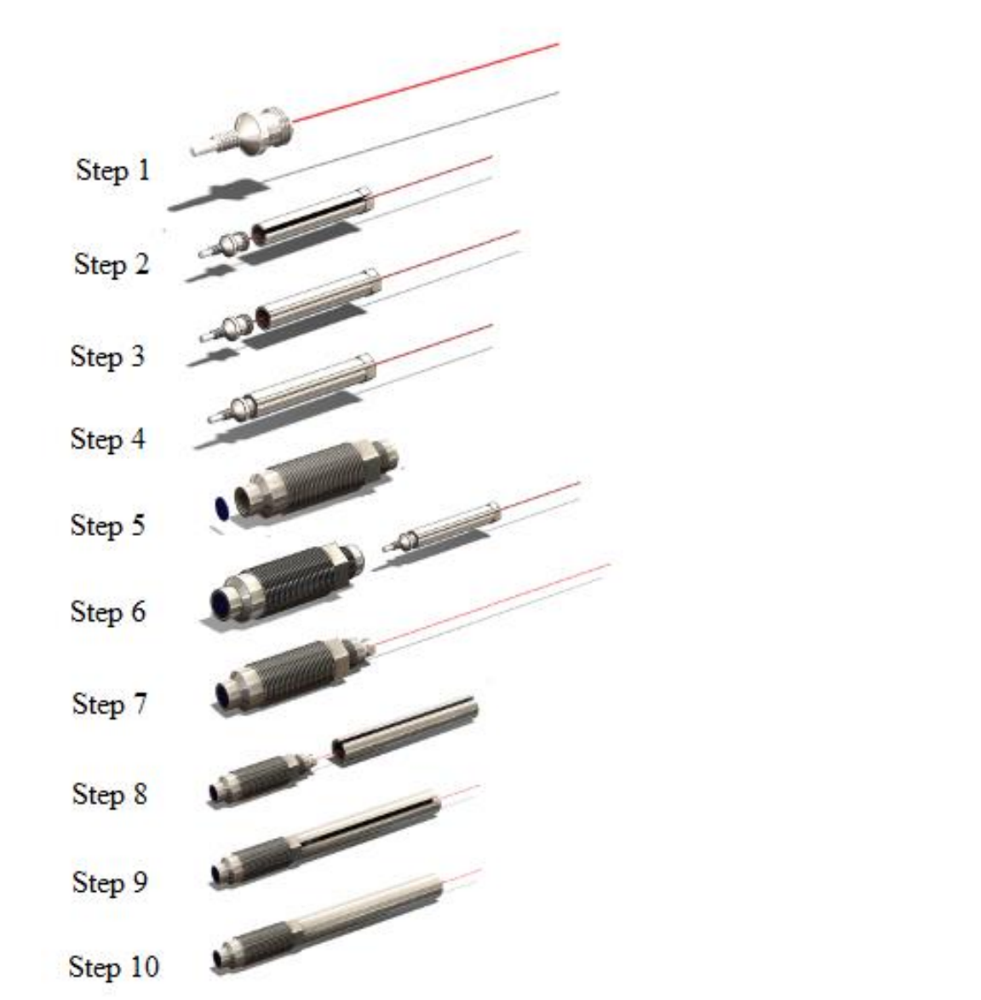

Project Overview
Validated and improved the design of an optical pressure transducer using COMSOL Multiphysics, simulating the combined effects of optical geometry, fluid environment, and thermal-mechanical properties on sensor accuracy.

 


My Contributions
-
Created detailed finite element models of the transducer, analyzing stress distribution and thermal effects on measurement accuracy. Proposed an improved mounting method at the sensing tip that reduced deformation and broadened the usable simulation environment for general testing scenarios.
Technologies
COMSOL Multiphysics, Mechanical Design, Stress & Thermal Simulation
What I Learned
This project gave me practical experience in applying multiphysics modeling to sensor design. I learned how optical and mechanical domains interact in transducer performance and how robust structural improvements can expand the reliability of precision instrumentation.